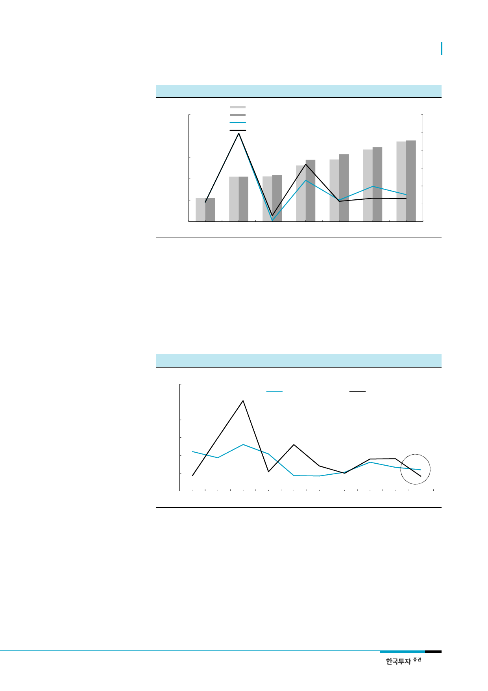

SK하이닉스(000660)
[그림 11] 전 세계 서버수요 추정치 변경
(천대)
14,000
13,000
가트너 전세계 서버수요 추정치 (2017년 4월, 좌)
가트너 전세계 서버수요 추정치 (2017년 1월, 좌)
가트너 전세계 서버수요 증가율 추정치 (2017년 4월, 우)
가트너 전세계 서버수요 증가율 추정치 (2017년 1월, 우)
12,000
11,000
10,000
(%)
12
10
8
6
4
2
9,000
2014
2015
자료: Gartner, 한국투자증권
2016
2017F
2018F
2019F
0
2020F
데이터 트래픽 증가율 둔화될
경우 서버디램 수요 둔화될 듯
현재의 서버디램 수요강세에는 한계가 있을 전망이다. 서버용 CPU시장을 독점하고 있는 인
텔이 CPU 신모델을 출시하면서 ASP를 높이고 있지만 2017년 DCG 매출액 증가율은 2016
년 8%보다 둔화될 것으로 예상된다. 데이터 트래픽 증가율이 다시 낮아질 경우 완제품업체
들의 부품재고조정에서 보는 바와 같이 xSP업체들의 서버 및 서버디램 수요증가율은 더 큰
폭으로 낮아질 수 있다. 우리는 2013년 서버디램 출하량 증가율과 데이터 트래픽 증가율 간
의 괴리가 이후 서버디램 수요증가율을 33% 수준으로 낮추는 요인이었다고 판단한다. 따라
서, 데이터 트래픽 증가로 인한 서버디램 수요강세는 장기간 지속될 가능성이 높지 않다.
[그림 12] 데이터 트래픽 증가율 vs. 서버디램 채용량 증가율
(%)
120
100
데이터 트래픽 증가율
서버디램 채용량 증가율
80
60
40
20
0
2009 2010 2011 2012 2013 2014 2015 2016 2017F 2018F
자료: Gartner, CISCO, 한국투자증권
7